Discografia
Álbuns em ordem cronológica...

A Voz, o Violão, a Música de Djavan (1976)
O disco de estreia apresentou ao Brasil a síntese perfeita do samba com o jazz e a bossa nova. Traz o hino "Flor de Lis" e revela logo de cara o ritmo percussivo e sincopado do violão de Djavan, além de sua capacidade de criar melodias vocais complexas e altamente balançadas.
Ir para site
Djavan (1978):
Conhecido pelo público como Álibi, o segundo álbum consolidou sua identidade poética e vocal. Com arranjos mais encorpados e faixas marcantes como "Samba Dobrado" e "Cara de Índio", o trabalho expandiu sua sonoridade rítmica.
Ir para site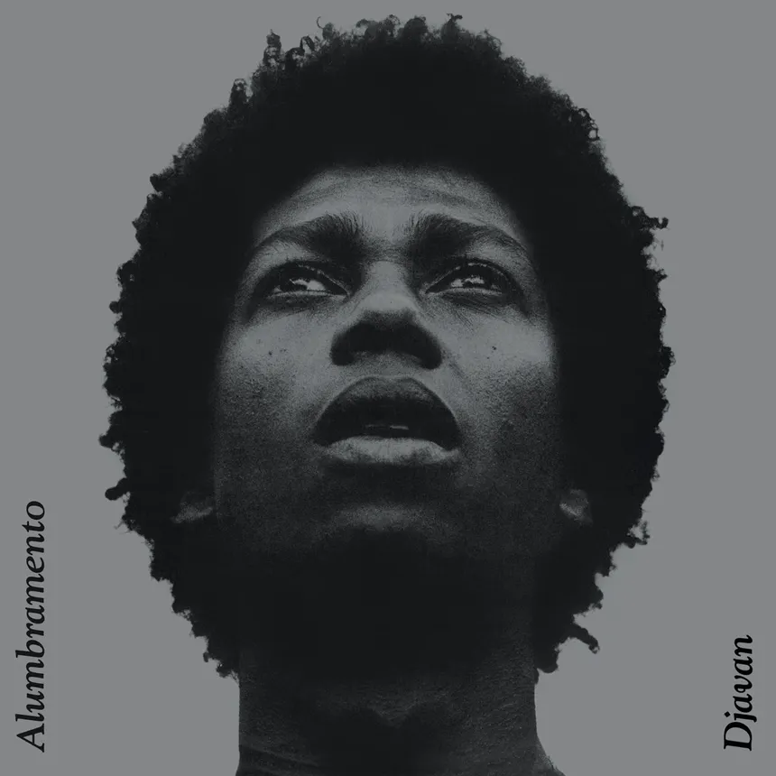
Alumbramento (1980)
Marca a transição para a maturidade musical e a projeção nacional definitiva. O álbum traz parcerias históricas com Chico Buarque ("Açucena") e Aldir Blanc ("Nereci"), além de eternizar canções como "Meu Bem-Querer" e "Açaí".
Ir para site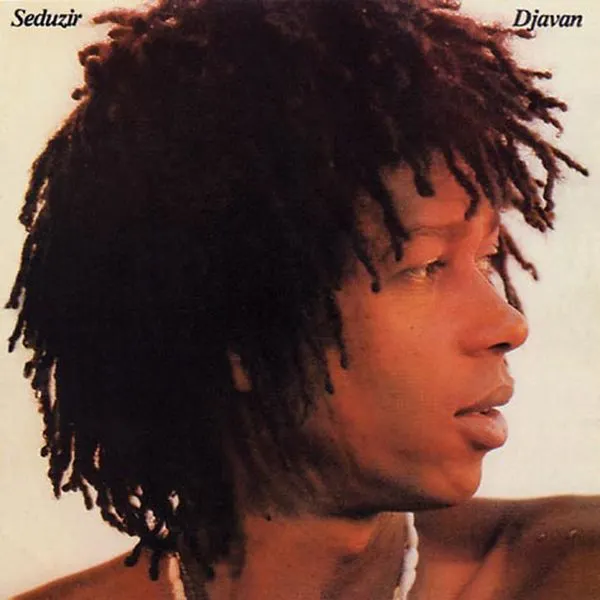
Seduzir (1981)
Disco que consolidou Djavan como um dos grandes nomes da MPB no início dos anos 1980. Com arranjos refinados e letras sensuais, traz canções como "Seduzir" e "Faltando um Pedaço", mostrando o equilíbrio entre sofisticação harmônica e apelo popular.
Ir para site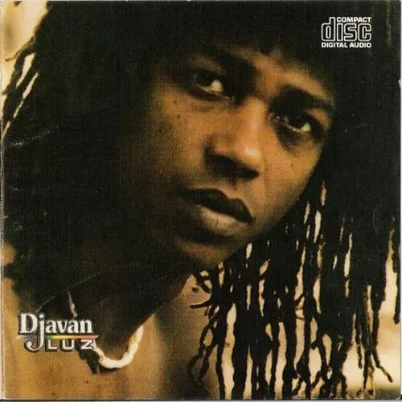
Luz (1982)
Um dos álbuns mais celebrados da carreira, reúne clássicos como "Sina" e "Samurai". Mistura samba, jazz e ritmos nordestinos com poesia cheia de imagens, e firmou de vez a assinatura sonora do artista alagoano.
Ir para site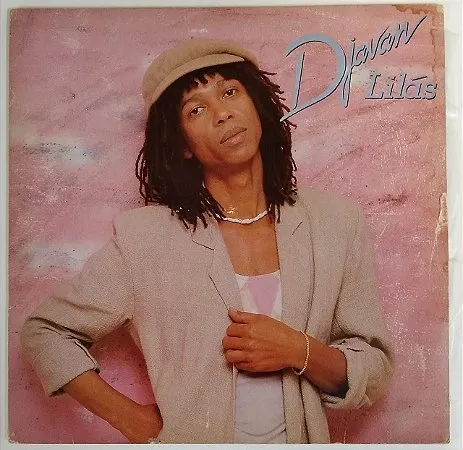
Lilás (1984)
Trabalho de maturidade, com harmonias ousadas e letras cada vez mais poéticas. O disco reforça a identidade única de Djavan e mantém o diálogo entre a música brasileira e a influência do jazz.
Ir para site
Meu Lado (1986)
Disco em que Djavan segue refinando a mistura de MPB, jazz e ritmos brasileiros. Os arranjos ficam mais elaborados e as letras mantêm o tom poético e cheio de imagens, mostrando um artista seguro de sua identidade musical.
Ir para site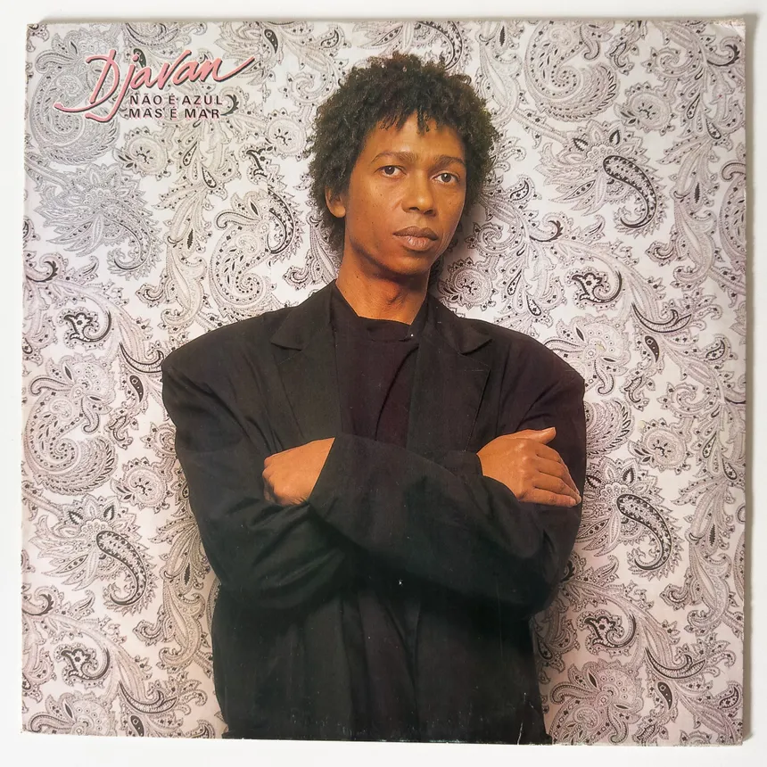
Não É Azul, mas É Mar (1987)
Álbum que mantém a veia poética de Djavan, com imagens do mar e da natureza em versos sobre amor e saudade. O título já traz o jogo de palavras e a delicadeza que marcam a obra do artista.
Ir para site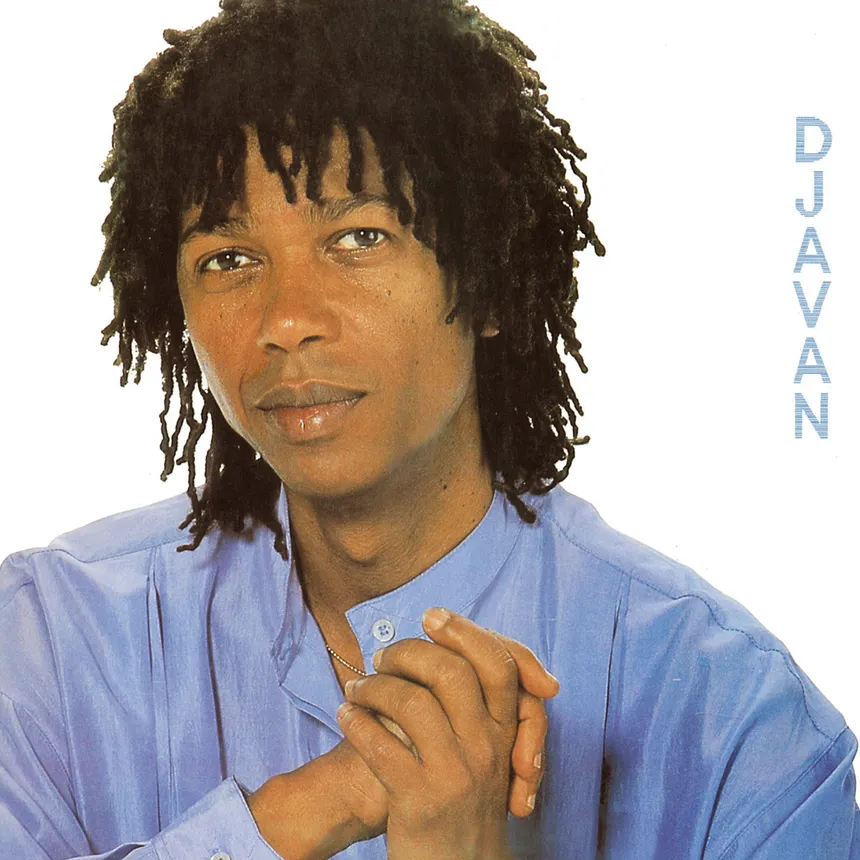
Djavan (1989)
Um dos discos mais marcantes da carreira, que traz "Oceano", considerada um dos grandes hinos românticos da música brasileira. O álbum reforça o cuidado de Djavan com harmonia, melodia e interpretação.
Ir para site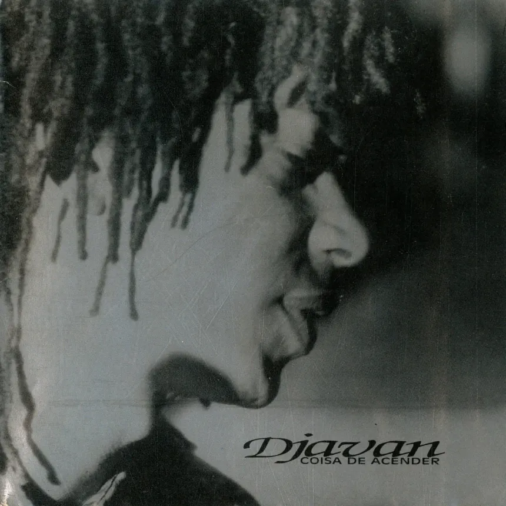
Coisa de Acender (1992)
Álbum dos anos 1990 que mostra um Djavan mais maduro, equilibrando sofisticação musical e apelo popular. Mistura a música brasileira com elementos do jazz e do pop, mantendo as letras sensuais e poéticas que marcam o artista.
Ir para site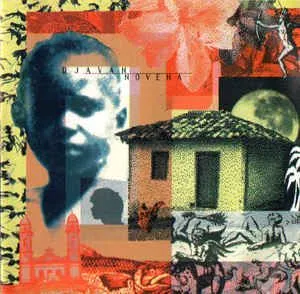
Novena (1994)
Disco que segue explorando a combinação de harmonias elaboradas, ritmos brasileiros e a influência do jazz. Mantém o cuidado com as palavras e com os arranjos, reafirmando a assinatura sonora do artista alagoano.
Ir para site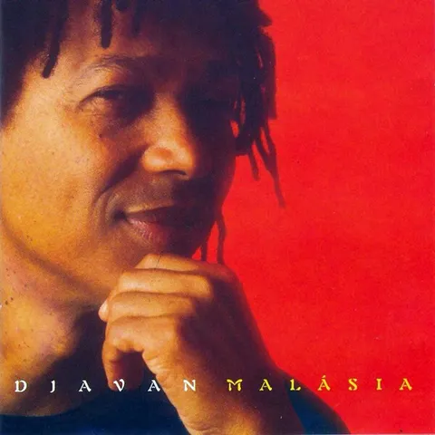
Malásia (1996)
Trabalho que mantém o equilíbrio entre o refinamento harmônico e a força melódica que consagraram Djavan. Os arranjos cuidadosos e as letras cheias de imagens reforçam a identidade única do cantor e compositor.
Ir para site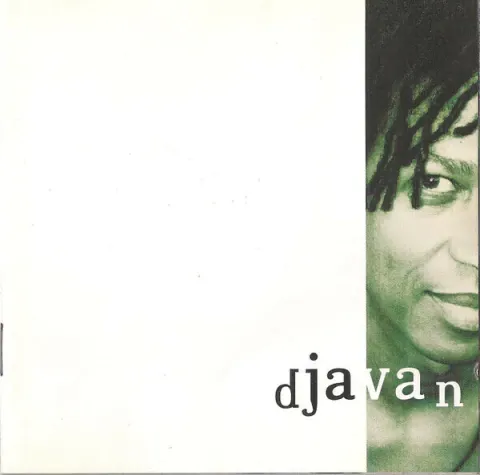
Bicho Solto (1998)
Disco do fim dos anos 1990 em que Djavan segue combinando harmonias sofisticadas, ritmos brasileiros e a influência do jazz. Mantém a fluidez das melodias e o cuidado com as palavras que marcam a sua obra.
Ir para site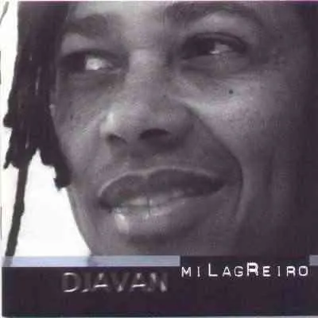
Milagreiro (2001)
Álbum que abre os anos 2000 mantendo a identidade musical de Djavan: arranjos refinados, melodias marcantes e letras poéticas. Mostra um artista maduro, que segue criando sem abrir mão do seu estilo próprio.
Ir para site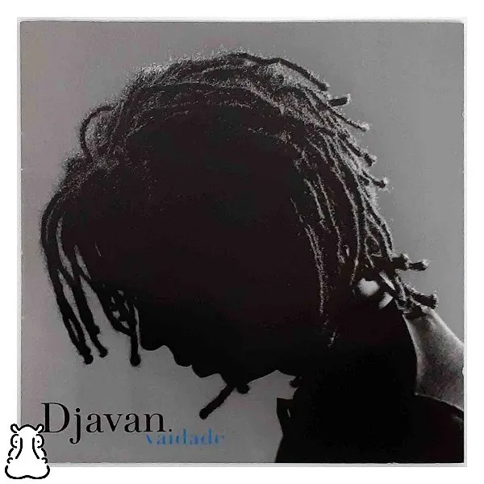
Vaidade (2004)
Trabalho que reafirma a assinatura sonora do artista alagoano, com harmonias elaboradas, ritmos brasileiros e letras cheias de imagens. Um disco que mostra a constância e a qualidade de uma carreira longa.
Ir para site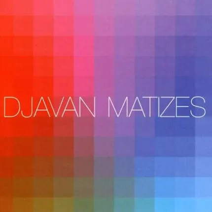
Matizes (2007)
Álbum de composições próprias que mostra Djavan em plena maturidade, com harmonias refinadas, ritmos brasileiros e letras poéticas. Reafirma a identidade sonora do artista alagoano ao longo de uma carreira consistente.
Ir para site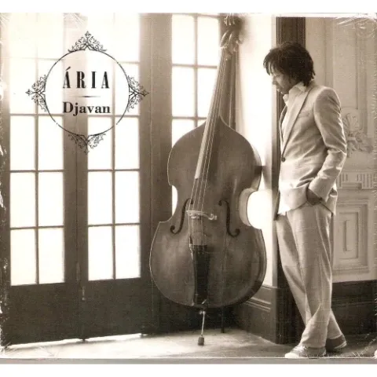
Ária (2010)
Álbum de intérprete, em que Djavan canta músicas de outros compositores. Mostra outro lado do artista, que coloca a sua voz e o seu jeito de interpretar a serviço de um repertório que não é seu.
Ir para site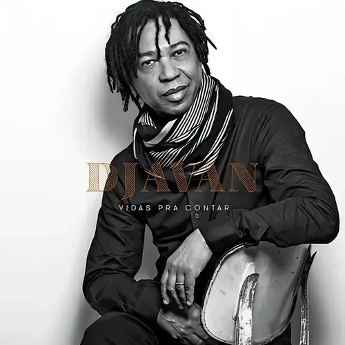
Vidas pra Contar (2015)
Disco que mantém a assinatura de Djavan: harmonias refinadas, ritmos brasileiros e letras poéticas. Mostra um artista com décadas de estrada que segue criando com cuidado e personalidade.
Ir para site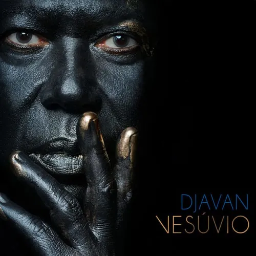
Vesúvio (2018)
Álbum que reafirma a sofisticação melódica e harmônica de Djavan, com arranjos cuidadosos e letras cheias de imagens. Um trabalho que dialoga com toda a trajetória do artista alagoano.
Ir para site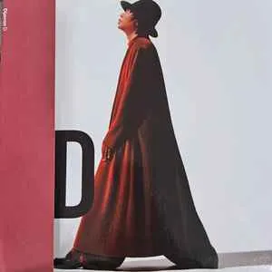
D (2022)
Disco recente da carreira de Djavan, que segue combinando MPB, jazz e ritmos brasileiros. Mostra um compositor que continua renovando a sua música sem abrir mão do estilo que o consagrou.
Ir para site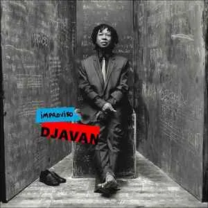
Improviso (2025)
Trabalho mais recente da discografia, que mantém o cuidado com a harmonia, a melodia e as palavras. Um disco que mostra a vitalidade criativa de Djavan depois de mais de cinco décadas de carreira.
Ir para site